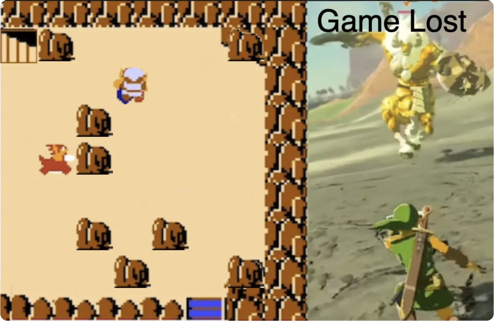

Indholdsfortegnelse
Introduktion
Vi skal lave følgende spil der hedder Zelda Old School Style:

Du kan lige prøve det af så du kender funktionaliteten.
Prøv spillet her: https://editor.p5js.org/JensValdez/full/aCJLmc8YD
Tag udgangspunkt i en start kode ved at gå ind på koden (linket nedenfor) og vælge File → Duplicate
https://editor.p5js.org/JensValdez/sketches/bw13rYLzV
Giv spillet et navn og husk at gemme løbende.
Delopgave 1: Baggrund
Vis baggrundsbillede og del det op i felter
Prøv løsningen til delopgaven her: https://editor.p5js.org/JensValdez/full/IBpQFulsv
Delopgave 2: Zelda
Indsæt Zelda og tilret så hun kan gå rundt på kortet
Prøv løsningen til delopgaven her: https://editor.p5js.org/JensValdez/full/W5EO2Dkjl
Delopgave 3: Begrænsninger
Tilret så Zelda ikke kan gå hvor der er sten (i de to hjørner til højre)
Prøv løsningen til delopgaven her: https://editor.p5js.org/JensValdez/full/9QMcWTPMR
Delopgave 4: Mure
Sæt selv nogle mure/sten ind på kortet
Prøv løsningen til delopgaven her: https://editor.p5js.org/JensValdez/full/_BgqBSq6T
Delopgave 5: Fjender
Tilret så der er to bosser/fjender der kan bevæge sig tilfældigt rundt og så man mister liv hvis man rør dem og så man kan tabe spillet hvis ikke man har flere liv
Prøv løsningen til delopgaven her: https://editor.p5js.org/JensValdez/full/D8rRYy7i4
Final game: Vind og tab
Tilret så der er nogle trapper man skal hen til og så man vinder spillet hvis man når derhen
Prøv løsningen til delopgaven her: https://editor.p5js.org/JensValdez/full/aCJLmc8YD